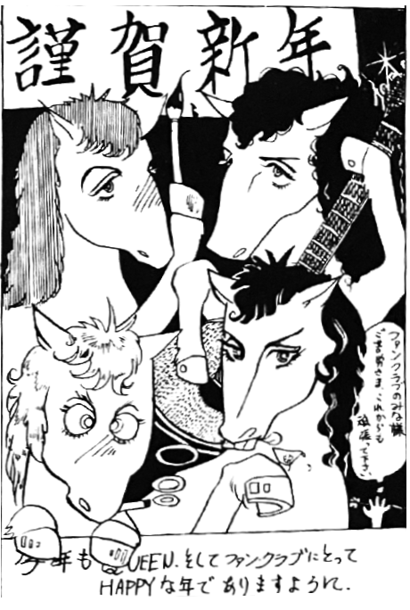

by Yuuko Touda
Vol. 10 is almost entirely previously printed English articles and interviews translated into Japanese, but there are also some New Years-themed cut illustrations and instructions on how to make your own Queen doll. People are still trading tapes of Star Sen in the back, nearly three years after it was broadcast.
This letter appears from a fan:
Hello, I am a huge, HUGE Queen fan! I especially love Freddie, and everyone always teases me for it. But now I have a little story... a while ago, I was on a break from exams, and went to visit a temple with a friend. We became friendly with a monk there (with a bald head, of course...) and this monk seemed a little different, his Japanese was a little different somehow. So my friend and I asked him about it, and lo and behold he attended university in London. That's all fine and good, but we didn't know what to make of what he said next.

by Reiko Yamanaka
"I went abroad to study, but rather than study, I spent all my time seeing rock bands," he told us. "I skipped classes and went to discos and pubs, and I got to know the guys from Queen, especially Brian. We got on well!" This monk was claiming to have known them very well, and to be good friends with Brian. At first, I mocked him, like "Yeah right, you're all talk!" But after hearing his story, this monk suddenly seemed like a god to me. When I asked him more about it, he told me that he and Brian were the same age and often hung out together back then. Of Brian, he said "He is incredibly smart and knows his limits."
I was so surprised that I forgot to ask him about the other members that day (damnit!!) But if I run into him again, I'll ask him. So Queen and Japan had a connection before they even debuted.
P.S. I'm not going to name this monk nor the temple as it would cause him a lot of trouble.